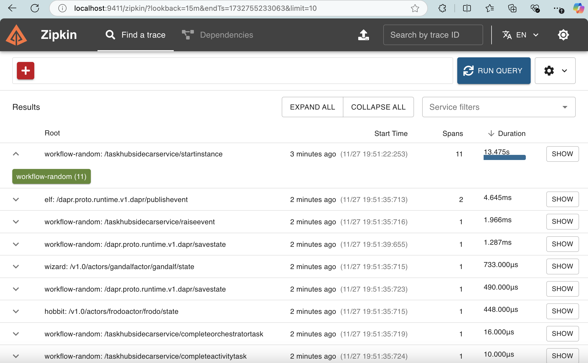

Event-Driven Agentic Workflows¶
Info
This quickstart requires Dapr CLI and Docker. You must have your local Dapr environment set up.
Event-Driven Agentic Workflows in Floki take advantage of an event-driven system using pub/sub messaging and a shared message bus. Agents operate as autonomous entities that respond to events dynamically, enabling real-time interactions and collaboration. These workflows are highly adaptable, allowing agents to communicate, share tasks, and reason through events triggered by their environment. This approach is best suited for decentralized systems requiring dynamic agent collaboration across distributed applications.
Agents as Services¶
In Floki, agents can be exposed as services, making them reusable, modular, and easy to integrate into event-driven workflows. Each agent runs as a microservice, wrapped in a Dapr-enabled FastAPI server. This design allows agents to operate independently while communicating through Dapr’s pub/sub messaging and interacting with state stores or other services.
The way to structure such a project is straightforward. We organize our services into a directory that contains individual folders for each agent, along with a components/ directory for Dapr configurations. Each agent service includes its own app.py file, where the FastAPI server and the agent logic are defined.
components/ # Dapr configuration files
├── statestore.yaml # State store configuration
├── pubsub.yaml # Pub/Sub configuration
└── ... # Other Dapr components
services/ # Directory for agent services
├── agent1/ # First agent's service
│ ├── app.py # FastAPI app for agent1
│ └── ... # Additional agent1 files
│── agent2/ # Second agent's service
│ ├── app.py # FastAPI app for agent2
│ └── ... # Additional agent2 files
└── ... # More agents
Your First Service¶
Let's start by definining a Hobbit service with a specific name, role, goal and instructions.
services/ # Directory for agent services
├── hobbit/ # Hobbit Service
│ ├── app.py # Dapr Enabled FastAPI app for Hobbit
Create the app.py script and provide the following information.
from floki import Agent, AgentService
from dotenv import load_dotenv
import asyncio
import logging
async def main():
try:
# Define Agent
hobbit_agent = Agent(
role="Hobbit",
name="Frodo",
goal="Take the ring to Mordor",
instructions=["Speak like Frodo"]
)
# Expose Agent as a Service
hobbit_service = AgentService(
agent=hobbit_agent,
message_bus_name="messagepubsub",
agents_state_store_name="agentstatestore",
port=8001,
daprGrpcPort=50001
)
await hobbit_service.start()
except Exception as e:
print(f"Error starting service: {e}")
if __name__ == "__main__":
load_dotenv()
logging.basicConfig(level=logging.INFO)
asyncio.run(main())
Now, you can define multiple services following this format, but it's essential to pay attention to key areas to ensure everything runs smoothly. Specifically, focus on correctly configuring the components (e.g., statestore and pubsub names) and incrementing the ports for each service.
Key Considerations:
* Ensure the message_bus_name matches the pub/sub component name in your pubsub.yaml file.
* Verify the agents_state_store_name matches the state store component defined in your statestore.yaml file.
* Increment the port for each new agent service (e.g., 8001, 8002, 8003).
* Similarly, increment the daprGrpcPort for each service (e.g., 50001, 50002, 50003) to avoid conflicts.
* Customize the Agent parameters (role, name, goal, and instructions) to match the behavior you want for each service.
The Agentic Workflow Service¶
The Agentic Workflow Service in Floki extends workflows to orchestrate communication among agents. It allows you to send messages to agents to trigger their participation and monitors a shared message bus to listen for all messages being passed. This enables dynamic collaboration and task distribution among agents.
Types of Agentic Workflows:
- Random: Distributes tasks to agents randomly, ensuring a non-deterministic selection of participating agents for each task.
- RoundRobin: Cycles through agents in a fixed order, ensuring each agent has an equal opportunity to participate in tasks.
- LLM-based: Leverages an LLM to decide which agent to trigger based on the content and context of the task and chat history.
Next, we’ll define a Random Agentic Workflow Service to demonstrate how this concept can be implemented.
from floki import RandomWorkflowService
from dotenv import load_dotenv
import asyncio
import logging
async def main():
try:
random_workflow_service = RandomWorkflowService(
name="Orchestrator",
message_bus_name="messagepubsub",
agents_state_store_name="agentstatestore",
workflow_state_store_name="workflowstatestore",
port=8004,
daprGrpcPort=50004,
max_iterations=2
)
await random_workflow_service.start()
except Exception as e:
print(f"Error starting service: {e}")
if __name__ == "__main__":
load_dotenv()
logging.basicConfig(level=logging.INFO)
asyncio.run(main())
Unlike Agents as Services, the Agentic Workflow Service does not require an agent parameter since it orchestrates communication among multiple agents rather than representing a single agent. Instead, the configuration focuses on workflow-specific parameters:
- Max Iterations: Defines the maximum number of iterations the workflow will perform, ensuring controlled task execution and preventing infinite loops.
- Workflow State Store Name: Specifies the state store used to persist the workflow’s state, allowing for reliable recovery and tracking of workflow progress.
These differences reflect the distinct purpose of the Agentic Workflow Service, which acts as a centralized orchestrator rather than an individual agent service.
The Multi-App Run template file¶
The Multi-App Run Template File is a YAML configuration file named dapr.yaml that allows you to run multiple applications simultaneously. This file is placed at the same level as the components/ and services/ directories, ensuring a consistent and organized project structure.
dapr.yaml # The Multi-App Run template
components/ # Dapr configuration files
├── statestore.yaml # State store configuration
├── pubsub.yaml # Pub/Sub configuration
└── ... # Other Dapr components
services/ # Directory for agent services
├── agent1/ # First agent's service
│ ├── app.py # FastAPI app for agent1
│ └── ... # Additional agent1 files
│── agent2/ # Second agent's service
│ ├── app.py # FastAPI app for agent2
│ └── ... # Additional agent2 files
└── ... # More agents
Following our current scenario, we can set the following Multi-App Run template file:
# https://docs.dapr.io/developing-applications/local-development/multi-app-dapr-run/multi-app-template/#template-properties
version: 1
common:
resourcesPath: ./components
logLevel: info
appLogDestination: console
daprdLogDestination: console
apps:
- appId: HobbitApp
appDirPath: ./services/hobbit/
appPort: 8001
command: ["python3", "app.py"]
daprGRPCPort: 50001
- appId: WizardApp
appDirPath: ./services/wizard/
appPort: 8002
command: ["python3", "app.py"]
daprGRPCPort: 50002
- appId: ElfApp
appDirPath: ./services/elf/
appPort: 8003
command: ["python3", "app.py"]
daprGRPCPort: 50003
- appId: WorkflowApp
appDirPath: ./services/workflow-random/
appPort: 8004
command: ["python3", "app.py"]
daprGRPCPort: 50004
Starting All Service Servers¶
Tip
Make sure you have your environment variables set up in an .env file so that the library can pick it up and use it to communicate with OpenAI services. We set them up in the LLM Inference Client section
To start all the service servers defined in your project, you can use the Dapr CLI with the Multi-App Run template file. When you provide a directory path, the CLI will look for the dapr.yaml file (the default name for the template) in that directory. If the file is not found, the CLI will return an error.
To execute the command, ensure you are in the root directory where the dapr.yaml file is located, then run:
dapr run -f .
This command reads the dapr.yaml file and starts all the services specified in the template.
Start Workflow via an HTTP Request¶
Once all services are running, you can initiate the workflow by making an HTTP POST request to the Agentic Workflow Service. This service orchestrates the workflow, triggering agent actions and handling communication among agents.
Here’s an example of how to start the workflow using curl:
curl -i -X POST http://localhost:8004/RunWorkflow \
-H "Content-Type: application/json" \
-d '{"message": "How to get to Mordor? Let's all help!"}'
In this example:
- The request is sent to the Agentic Workflow Service running on port 8004.
- The message parameter is passed as input to the workflow, which the agents will process.
- This command demonstrates how to interact with the Agentic Workflow Service to kick off a new workflow.
If you check the console where you started all the service servers, you will see the following output once the system reaches its maximum number of iterations.

Monitor Workflow Execution¶
As mentioned earlier, when we ran dapr init, Dapr initialized, a Zipkin container instance, used for observability and tracing.
We can use the Zipkin container to monitor our workflow execution. To do this, open your browser and go to http://localhost:9411/zipkin/. From there:
Click on Find a Trace and then Run Query to search for traces.

Select the trace entry with multiple spans labeled <workflow name>: /taskhubsidecarservice/startinstance.
When you open this entry, you’ll see details about how each task or activity in the workflow was executed. If any task failed, the error will also be visible here.